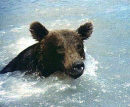
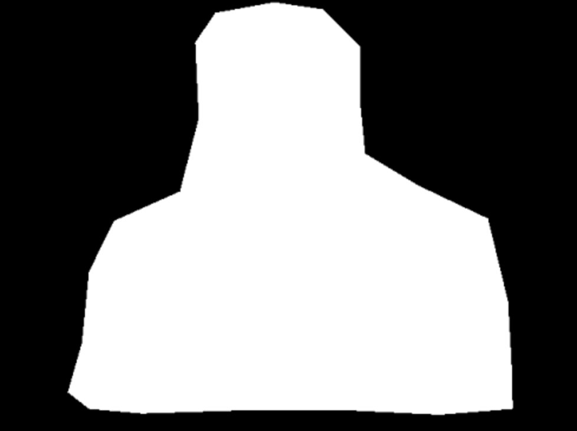

CS 180: Computer Vision and Computational Photography
Project Overview
In this project, I use Poisson Blending to blend one image seemlessly into another image. I also compare the results of Poisson Blending with naive blending and mixed gradient blending. This is a a simple technique with a broad set of applications including blending, tone-mapping, and non-photorealistic rendering
Part 1: Toy Problem
This part seeks to give conceptual intuition for the implementation in other parts. Here, I take the provided Toy Story image as well as an image of the tennis player Roger Federer. For each of them, I compute x and y gradients and one pixel intensity and reconstruct the images.
Toy Story Original and Reconstructed
Roger Federer Original and Reconstructed
Part 2: Poisson Blending
Poisson blending is a gradient-domain technique used to seamlessly blend a source region from one image into a target image.
The core idea is to preserve the gradients of the source region while ensuring a smooth transition with the target background.
To achieve this, the pixel intensities within the blending region are solved for by minimizing a least-squares energy function:
Here, \(v\) represents the pixel intensities of the blended image, \(s\) is the source image, and \(\mathcal{N}(i)\) denotes the 4-connected neighbors of pixel \(i\).
For pixels on the boundary of the source region, we use the intensities from the target image \(t\) as fixed values to ensure a seamless boundary transition:
To solve this optimization problem, we represent it as a sparse linear system in the form:
\[
A \cdot v = b
\]
where \(A\) is a sparse matrix encoding the gradient constraints, \(v\) is the vector of unknown pixel intensities, and \(b\) contains the fixed target values and source gradients.
The system is solved for each color channel independently using a sparse least-squares solver.
This method ensures that the gradients of the source region dominate within the blended region while maintaining smooth transitions with the surrounding target image.
Source Image: DogTarget Image: PoolMask outline of Dog
Naive Blended ResultPoisson Blended Result
Source Image: PlaneTarget Image: UnderwaterMask outline of Plane
Naive Blended ResultPoisson Blended Result
Source Image: PenguinTarget Image: Mountaineers on a snow-capped hillMask outline of Penguin
Naive Blended ResultPoisson Blended Result with penguinPoisson Blended Result with two penguins
Minor Failure Case:
If you look very closely at the bottom-left of the first penguin, you see a bright white spot that wasn't present in any of the original source or target images.
Bells and Whistles - Mixed Gradients
The Mixed Gradients method extends Poisson blending by combining the gradients of both the source and target images.
Instead of relying solely on the source gradients, it dynamically selects the stronger gradient (i.e., the one with the larger magnitude)
between the source and the target for each pixel. The optimization problem is formulated as:
In this formulation, \(v\) represents the pixel intensities of the blended image, \(s\) is the source image, \(t\) is the target image,
and \(\mathcal{N}(i)\) denotes the 4-connected neighbors of pixel \(i\). The first term ensures gradient preservation within the source region,
while the second term enforces a smooth transition at the boundary by incorporating gradients from both the source and target.
Similar to Poisson blending, this problem is solved as a sparse linear system:
\[
A \cdot v = b,
\]
where \(A\) encodes the gradient constraints, \(v\) is the vector of unknown pixel intensities, and \(b\) incorporates the mixed gradients and boundary conditions.
This approach ensures that sharp features from the source and target are preserved, resulting in a visually seamless blend.
Source Image: Roger FedererTarget Image: UnderwaterMask outline of Roger Federer
Poisson Blended ResultMixed Gradient Blended Result